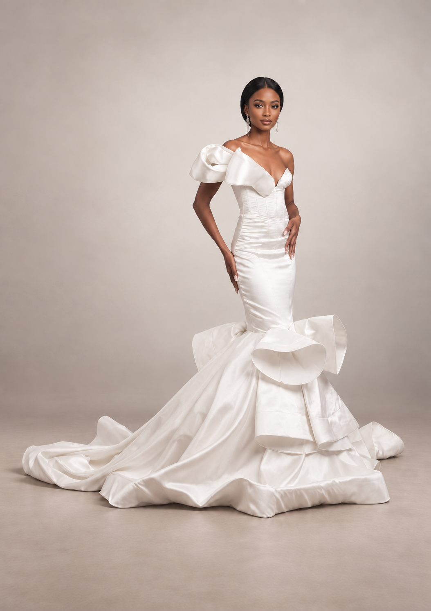

Jane.M Atelier, Maseru, Lesotho
Wedding dresses,
made for you.
Jane.M Atelier creates bespoke wedding dresses in Maseru, Lesotho, considered around your ceremony, personal style and the way you want to feel on the day.
Discuss my look
Your wedding dress should feel personal from the first sketch to the final fitting. Jane.M Atelier creates bespoke wedding dresses in Maseru for brides who want a made-to-measure silhouette, considered detail and a clear process.
This is custom bridal wear, not a rental rack. Jane.M can discuss a bridal gown, white wedding dress, modern corset wedding dress, reception dress or a personal ceremony look shaped around your body, venue and movement.
Start with your wedding date, venue, references and the details that matter to you. The consultation can explore shape, corsetry, neckline, sleeves, movement, coverage, fabric direction and the finish you want to carry through the day.
Measurements, fittings and the production plan are confirmed around the agreed design. Fabric is selected separately to suit the dress and budget, with workmanship quoted once the construction and finishing details are clear.
Free personal styling
Not sure what to wear?
Use the free Jane.M Style Studio to plan outfits around clothes you already own. No purchase, booking or sign-up is required.
Your next move
Plan your next step
Consultation notes
Questions, answered.
Can I bring wedding-dress inspiration to the consultation?
Yes. References are a helpful starting point for discussing silhouette, detail, fabric and the feeling you want the dress to have.
Does Jane.M rent wedding dresses?
Jane.M focuses on made-to-measure bridal and occasion pieces. Rental availability is not presented as a standard service on the website.
Can Jane.M make a corset wedding dress?
Yes. Corsetry can be discussed as part of the bridal silhouette, coverage, comfort and construction plan.
How does Jane.M plan fittings for a wedding dress?
The fitting plan is confirmed once the wedding date, design direction and production timeline are understood.
Can Jane.M make bridesmaid dresses as well?
Yes. Jane.M can discuss a cohesive wedding direction for bridesmaids, while considering each wearer’s fit and comfort.